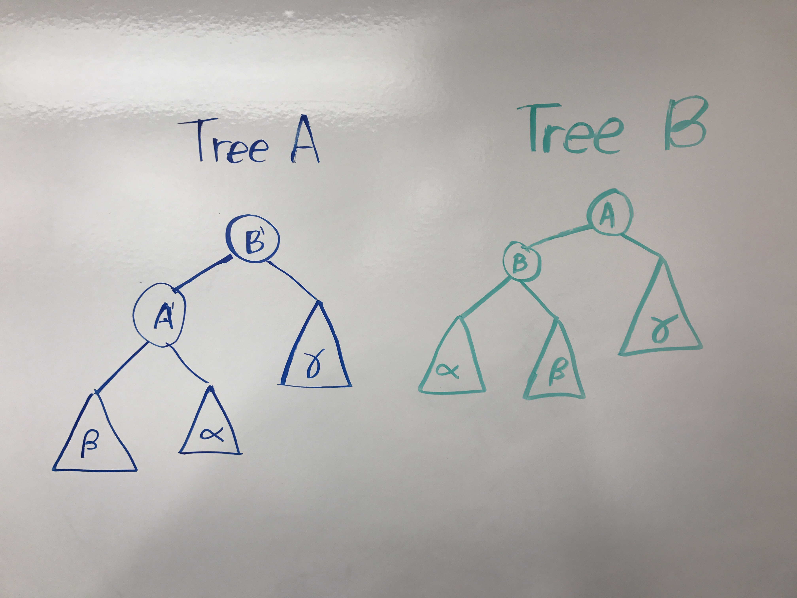

Here is definition of the algorithm, then a step by step method on how to execute it. The initial algorithm allows for a constant number of combinations, but in this example 2 are used to simplify the explanation.
Given two online BST data structures, A and B, let P_A and P_B be the amortized upper-bound with overhead f(n) on the running time of A and B respectively on an online access sequence X. Then there exists an online BST data structure, Combo-BST, that given the initial trees A and B and overhead f(n) has an upper-bound of:
Combo-BST = O(min(P_A, P_B) + f(n))
Assume we are combining trees A and B, both with some overhead f(n). We want to complete a set of accesses X.
